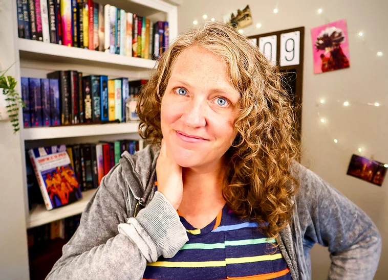

michelle schusterman
AUTHOR\GHOSTWRITER\WRITING INSTRUCTOR
Some Bunny to Love
Bio

Michelle is the author of over a dozen critically acclaimed novels for middle grade and young adult readers. Her books have received starred reviews from Kirkus, Booklist, and Publisher's Weekly and have received honors including multiple Junior Library Guild selections, the CBCC Best of 2019 List, ALA's Rainbow List and Quick Picks for Reluctant
Readers List, and the NC State College of Education Comic Relief Reading List. After thirteen years of moving from Salvador to Seoul to Seattle to New York City, Michelle is currently back in her hometown of Dallas with her husband, Josh, and their polar bear disguised as a lab puppy, Rosa.